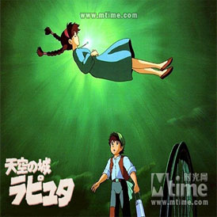

-

蝙蝠侠前传：黑暗骑士崛起1
蝙蝠侠前传3：黑暗骑士崛起-为2008年暑期上映的美国大片《蝙蝠侠：黑暗骑士》的续集，主演和导演等仍是原班人马，并且新增了只存在于漫画&动画版中的人物：毒药Bane（汤姆。哈迪饰），猫女Selina Kyle（安妮·海瑟薇饰)
开心魔法2
《开心魔法》可以看作是《开心鬼》的延续，也属于“旧瓶”装“新酒”，“《开心鬼》曾该系列主打‘开心’的概念，而《开心魔法》中不仅有喜剧的元素，还增添了魔幻色彩。”黄百鸣说。除了“开心”、“魔幻”两大元素，导演叶伟信透露，影片中的青春气息也是一大亮点...
暮光之城破晓3
当生命是你所能给予自己挚爱的人 。 破晓的一切时，你怎么可能不把生命献给他呢？对于贝拉来说，无可救药地爱上爱德华之后，生活既像是充满甜蜜的幻想，又像是深不可测的可怕梦魇。不管她作出什么样的抉择，都将牵动着两个族群的命运。贝拉在强大的黑暗势力来犯时，又能否守护自己的女儿呢？有如漫漫长夜之后的破晓...
星空4
《星空》，描述的是一个关于长大的故事：有个不爱说话的少女，认识了一个不爱说话的少年，他们都不是最快乐的孩子。 有一天，他们逃离城市，翻山越岭，来到少女的爷爷曾经住过的山中小屋。在山里的夜晚，他们看到了最美丽的星空。后来，少女病了，而少年不知去向……
幸福额度5
《幸福额度》影片探讨了当下社会的“爱情消费”。林志玲在片中分饰一对双胞胎姐妹：宅女晓青和拜金女晓红。相信真爱的妹妹晓青与交往十年的男友姜成分手，一夜之间对爱情彻底失望；而姐姐晓红... -
Famous Director
排演戏剧或影视片的时候，组织和指导演出工作担任导演工作的人，是用演员表达自己思想的人。作为影视创作中各种艺术元素的综合者，导演组织和团结剧组内所有的创作人员和技术人员和演出人员，发挥他们的才能，使众人的创造性劳动溶为一体。
谢晋说：“导演是用镜头写作的作家。”而我说他们更是镜头的艺术家，格里菲斯、爱森斯坦、法斯宾德、吴宇森、张艺谋、卡梅隆等三十名著名电影导演和他们的经典巨片作了一次“全景”式的扫描和剖析，语言精准简明，视点新颖独到，图文相映生辉，既有助于影视界从业人士提高自己的专业修养，也是众多电影爱好者登堂入室的常备手册。堪称国内从镜头语言入手进行影视艺术研究的先声，具有丰富的启发意义和鲜明的审美价值。导演的再创作以电影文学剧本为基础，运用蒙太奇思维进行艺术构思，编写分镜头剧本和“导演阐述”，包括对未来影片主题意念的把握，人物的描写，场面的调度，以及时空结构、声画造型和艺术样式的确定等。然后物色和确定演员，并根据总体构思，对摄影、演员、美术设计、录音、作曲等创作部门提出要求，组织主要创作人员研究有关资料，分析剧本，集中和统一创作意图，确定影片总的创作计划。导演还要按照制片部门安排的摄制计划，领导现场拍摄和各项后期工作，直到影片全部摄制完成为止。 一部影片的质量，在很大程度上决定于导演的素质与修养；一部影片的风格，也往往体现了导演的艺术风格。
也许你并不知道他们的名字，也许你并不知道他们的出身，也许你并不了解他们的荣誉，但是我想在电影的世界里，你曾今一定被他们影响过，因为世界就是这样被他们影响着...
Steven Spielberg
这是毫无争议的,再难找到一位导演在商业与艺术间游刃有余,把商业与艺术结合的天衣无缝.他的电影不失娱乐,同时兼备极高的艺术性,而更多的则是人文关怀,这就是他区别于好莱坞另两为超级大导卢卡斯和卡梅隆的地方.
称斯蒂芬.斯皮尔伯格(StevenSpielberg)为“电影奇才”一点也不为过，这位以史诗片《辛德勒名单》而荣获奥斯卡金像奖的大导演，他的知名度却以《大白鲨》、《E.T.》、《侏罗纪公园》等著名的商业娱乐片为更多的电影迷们所知，当人们带着这种印象涌向电影院去欣赏那部黑白电影《辛德勒名单》时，却发现了斯皮尔伯格的另一个世界，一个充满智慧和理性的世界，一个真正的电影艺术的世界。- 《大白鲨》1975年 （Jaws）;
- 《ET外星人》1982年 （E.T. the ExtraTerrestrial）;
- 《侏罗纪公园》1993年 （Jurassic Park）;
- 《辛德勒名单》，1993年 （Schindler's List）;
- 《拯救大兵瑞恩》，1998年 （Saving Private Ryan）;
GeorgeLucas
乔治·卢卡斯(GeorgeLucas)1944年5月14日出生于美国加州。当他还是南加州大学的一名学生时，他便结识了大导演科波拉并与之成为好朋友。正是在科波拉的辅导下，卢卡斯在学生期间便首次尝试拍片滋味，制作了一部仅20分钟的短片《THX-1138》(1971)。在这部影片中，卢卡斯尽情展现了他的导演才华，令人刮目相看。两年后，卢卡斯又导演了带有自传色彩的影片《AmericanGra-ffiti》(1973)，这部投资仅75万美元的影片竟成了当时最有影响力的影片之一，而卢卡斯也因此走上了独立的导演生涯。
- 《星球大战》1977;
- 《五百年后》1971;
- 夺宝奇兵 2006;
- 风云际会 1988;
James Francis Cameron
詹姆斯·卡梅隆 1954年8月16日生于加拿大的著名电影导演，擅长拍摄动作片以及科幻电影。他导演的这些电影经常超出预定计划以及预算，不过都很卖座。1984年推出自编自导的科幻片《魔鬼终结者》后，使他一夜成名，多才多艺的他除导演外，又是编剧还是制作和剪辑，他的电影主题往往试图探讨人和技术之间的关系。目前电影票房史上最卖座的两部电影《泰坦尼克号》（1997）和《阿凡达》（2009）都是他执导的作品。其中《阿凡达》堪称世界电影之最，全球票房超过25亿美金，目前是全世界票房收入最高、也是历史之上最成功的电影之一。
Peter Jackson
.彼得•杰克逊 1961年10月出生于新西兰惠灵顿，从五六岁开始，他就是个忠实的电视迷，8岁的时候，因为怪物片《金刚》的影响，他开始迷上电影特效，那时候，他的理想就是当个出色的特效师。《金刚》、《魔戒》、《指环王》《指环王》成就了杰克逊,杰克逊造就了《指环王》.他的《指环王》达到了既巧夺天工而又浑然天成的境界,完美这个词也许最适用于《指环王》三部曲.
Oliver Stone
对于奥利弗·斯通的艺术，总给人以独特的理解。他并非是那种为了艺术而艺术，或是把自我地位看得如何高大。在他的艺术生命中，事件和由事件引出的人物均是必不可少的。他所创造的是一个看起来近乎于真实或者一眼望去就虚无缥缈的世界，而这个世界又是如此的混乱，他的电影风格却又是那样的明确、独立，总是让人惊叹不已 。
Martin Scorsese
马丁•西科塞斯 随便挑选他的几部代表作中的一部就能使他名留影史.但是每每在奥斯卡搬奖典礼上看见他失落的背影,总是有些悲伤. 罕见的学者型影人，知识丰富，对社会问题投以严肃的关怀。
Clint Eastwood
克林特•伊斯特伍德 在艺术道路上坚持不懈的他成为铜臭的好莱坞里一道亮丽的风景线.从《不可饶恕》开始,佳作不断,给影迷们带来了一次次心灵的洗礼.
Ridley Scott
雷德利•斯科特是位才华横溢的大导演,他的《银翼杀手》和《异形》位列影史最经典科幻电影第一和第四.近年他的《角斗士》掀起了史诗片浪潮,《黑鹰坠落》其高超的镜头语言,剪辑水准和《拯救大兵瑞恩》相比有过之而无不及.
-
-
2012
2012年，地球各地灾难不断，这与玛雅文明中预言末日到来相吻合。而政府秘密执行的方舟计划不能保护所有人，该谁去谁留？大武生My Kingdom
吴尊和韩庚在片中饰演一对“武生”师兄弟，大S饰演两人仇敌的女弟子。三人展开一场围绕爱情、欲望、欺诈和背叛的故事。盗梦空间Incetpion
本片被定义为“发生在意识结构内的当代动作科幻片”，诺兰继《黑暗骑士》后再次给我们带来惊喜，带观众游走于梦境与现实之间。非诚勿扰If You Are The One
秦奋的天才发明被风险投资人天价买断。一夜暴富的这位“剩男”揣着家底开始了“征婚”旅程，一段“人间喜剧”就此出演。霸王别姬 PFarewell My Concubine
影片围绕两个京剧艺人半个世纪的悲欢离合，展现了对传统文化、人的生存状态及人性的思考与领悟加勒比海盗 Pirates of the Caribbean
故事发生在传说中海盗最活跃的加勒比海(Caribbean Sea)。这片神秘的海域位于北美洲东南部，那里碧海蓝天，阳光明媚，海面水晶般清澈。机器人总动员WALL·E
WALL·E已经在地球上孤独地生活几百年了，他爱上了自己遇见的第一个机器人伊芙，并跟随着她展开了一场充满奇幻的太空之旅。海豚湾The Cove
日本的太地町是一个风光秀丽的美丽海湾，然而每年这里有23000头海豚被日本渔民捕杀。本片对这一残忍的行为进行谴责。乱世佳人Gone with the Wind
在壮丽的时代画卷上演绎出一个极不寻常的爱情故事，开创了以真实而辽阔的历史背景加虚构人物故事的爱情史诗片先河。 -
Castle in the Sky
《天空之城》（天空の城ラピュタ）是日本吉卜力工作室于1986年推出的一部动画电影。《天空之城》的原作、监督、脚本和角色设定都是由宫崎骏来担任，使得这部作品充满了宫崎骏的理念。出现在《天空之城》中的空中城堡拉普达（Laputa）一般被认为是来自于英国作家乔纳森·斯威夫特的知名小说《格列佛游记》中的飞岛国。后因此开发出同名网游。其主题曲《伴随着你》（通称：天空之城）由音乐家久石让作曲，因以其让人落泪的优美曲调和动人心弦的美妙音律而闻名全球，被改编成多种版本，成为经典的轻音乐名曲，也成为流芳百世的世界名曲。
《天空之城》是一部宫崎骏由乔纳森·斯威夫特写的小说《格列佛游记》萌生创意而作的电影，某些人认为其故事情节较为传统。但这不等于它没有新意，相反，《天空之城》一剧充满了很多新元素。电影中近乎完美地刻画出故事所发生时代的世界的景观，有点科幻色彩，也有点神话色彩，还有点欧洲工业革命时期的味道，诸如高架铁轨上的旧式火车，黑漆漆的矿洞，飞空艇，橡泥塑的机器人等等…… 紧张激烈的情节贯穿整部电影，但蔚蓝的天空和浓浓的白云反而将尖锐的冲突淡化得更耐人寻味；人物的表达很多时候不是靠台词而是靠人物的具体动作，使人物的性格更显深刻。 小姑娘希达（Sheeta）是传说中“天空之城拉普达（Laputa）”王族的后裔。那曾是超越地上文明不知几千年的空中文明，但不知为何，希达的祖先离开“天空之城”，抛弃发达的科技，在地面上过起隐居的生活。然而一天，几个不明身份的男子出现在她家门口……
故事由希达所坐的军队飞行船遭到空中海盗的袭击而开始。争斗中希达从万米高空的飞行船上跌落下来…… 故事另外一个主人公少年巴斯（Pasu）是矿工机师的徒弟，这一天收工时，发现天上有个亮晶晶的东西正在慢慢地下落。是什么？UFO？他飞也似的跑过去，发现是一个好可爱的女孩子，在一团蓝光的包围下从天上飘下来了…… 第二天希达在巴斯的房间里醒来，发现房里有一张“天空之城拉普达”的照片。这是巴斯的父亲冒着生命的危险历尽艰险才拍到的真正的天空之城，但除了斯威夫特之外，没有人相信他。于是父亲在郁郁寡欢中去世了。巴斯发誓，一定要向他人证实，世上真的有天空之城存在！ 嗅觉灵敏的海盗很快就找上门来了。接下来就是一段令人眼花缭乱的追捕与逃跑镜头，最后二人在众目睽睽之下掉入万丈深的矿井，希达戴的飞行石又一次发光，令他二人安全飘落。矿井中，飞行石和井下的矿石发生共鸣，原来这里曾是开采飞行石原料的地方，但提炼飞行石的技术，传说只有拉普达人才掌握着。
二人刚出矿井，就被军队的人抓住了。希达被带往要塞，在那里，一个叫穆斯卡的人给希达看一个巨大的机器人，说是从天空之城掉下来的，凭当时的科技无法令它再启动。当天晚上，希达念起祖辈所流传的寻求帮助的咒语，飞行飞行石，石发出光，令机器人再次活起来，整个要塞变成火的海洋。
巴斯趁乱和海盗达成联盟飞入要塞救出了希达。匆忙中希达丢失了飞行石，而穆斯卡得到了宝石，命军队按照宝石上圣光的指引，飞向天空之城。另一方，海盗妈妈从希达的记述中算出了天空之城的方位，带着希达的二人乘海盗飞艇全速前进！ 即将到达之时，忽然前方出现龙卷风，和穆斯卡的舰艇又狭路相逢，交战中巴斯和希达的滑翔机被卷入龙卷风里。
这里是被上帝抛弃的领域，自然的恐怖与众神的愤怒在这里集结，飞越浓重的黑暗，在纵横飞啸的电光中，穿过闪电的回廊，突破生与死的界限，命运之门再次敞开在少年的面前……龙卷风的中心，正是传说中的飞岛“天空之城拉普达”！这儿是寂静的天堂，只有机器人值守的空中都市，植物和远古生物的家园。 宫崎骏的作品中，科学技术最好的地方就是没人居住，在柯南的“未来世界”以及“天空之城”都是如此。反之，“风之谷”中为生存而奋斗着的人们虽然只有古老的技术，但却是机器的主人，《天空之城》的飞行海盗们也是这样。
穆斯卡抓住了海盗们，也来到了拉普达，他迫使希达和他一起进入中央控制室，启动黑石碑上的文字，即将开始他称霸世界的野心。希达抢回飞行石，为了阻止穆斯卡，她和巴斯一起念起毁灭一切的咒语：巴鲁斯。拉普达解体，邪恶和助纣为虐的武器系统一同化为大气层的火球坠入云海中，而使拉普达漂在空中的巨大飞行石结晶载着拉普达的生命之树，上升到天空的尽头……
Leave a comment:
-
Contact info:
Tel: +80 44 255-22-35
E-mail: SCU_WEB_CODE_YUAN@163.com
Adress: sichuan university computer science
QQ : 123456789
Show Our Team
Have Something To Say?
{kind=link}
{kind=link}
{kind=link}
{kind=link}
{kind=link}
{kind=link}
{kind=link}
{kind=link}
{kind=link}
{kind=link}
{kind=link}
{kind=link}
{kind=link}
{kind=link}
{kind=link}
{kind=link}
{kind=link}
{kind=link}
{kind=link}
{kind=link}
{kind=link}
{kind=link}
5 comments:
这个世界有没有秘密，在一个无人知晓的地方深藏，默默度过此生的孤独。我们的孤独就象天空中漂浮的城市，仿佛是一个秘密，却无从述说。我们拥挤着，呼吸着，望着天空。这个世界还有多少未知的秘密象我们自身一样孤独？ 请让我与那个秘密相逢，就象一种孤独拥抱另一种孤独，在身体接触的刹那间，了解，被了解。流云间漂浮着的天空之城，你和我一样，拥挤着，却无人知晓。
或许每个人都在抬头的一瞬间，看见天空之城的影子投映在眼里，低下头来，却永远找不到归宿。热泪早已不合适这个世界，还有什么可以惊讶？一切皆可能。我们在可能性过剩中漠然停止。
青草在刹那间变的熟悉，它不再是眼中的一片风景，它是我的栖息之地。那些你和我编织出来的网，突然见裂开，让我滑落到天空与土地之间，与鸟儿亲近，与花儿交谈。我，花儿，鸟儿，天空之城，都是世界上的一个秘密，只可惜互不倾听。
有谁可死在流云之间，看见时空的门打开，逃离轮回的指涉。有谁可消失在天空之际，却永远不会坠落。晴天的时候，我愿意抬头看看我的天空之城是否正飞过。谢谢，宫崎骏。